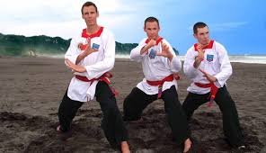
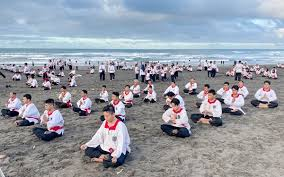
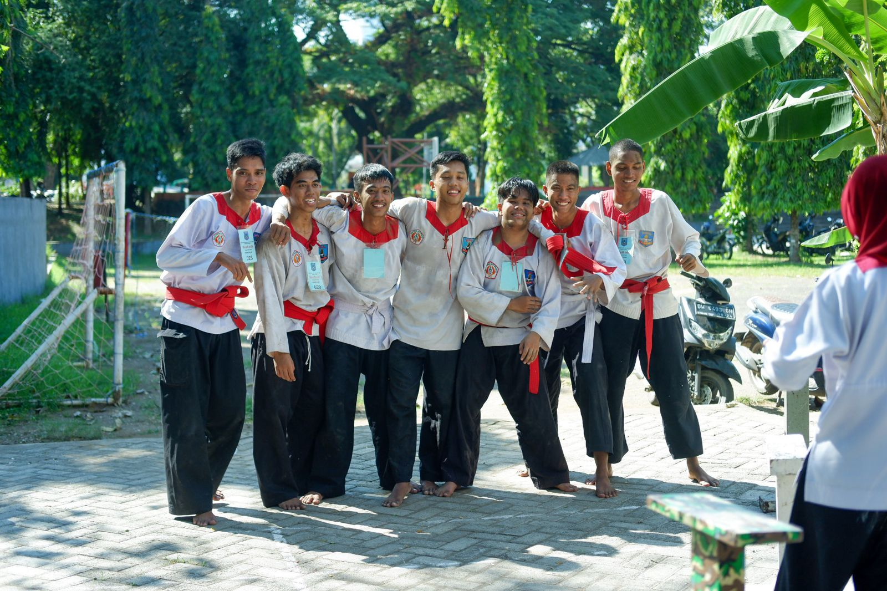
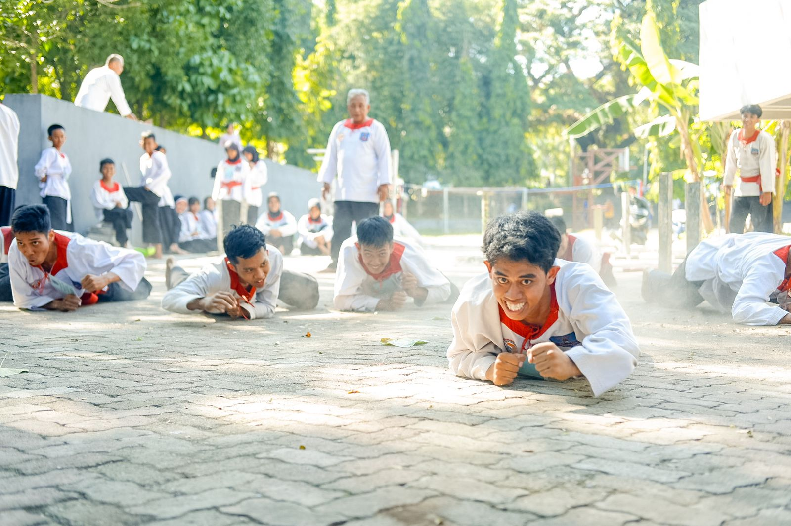
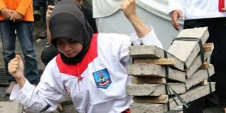
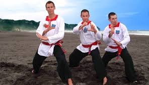
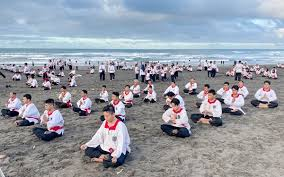
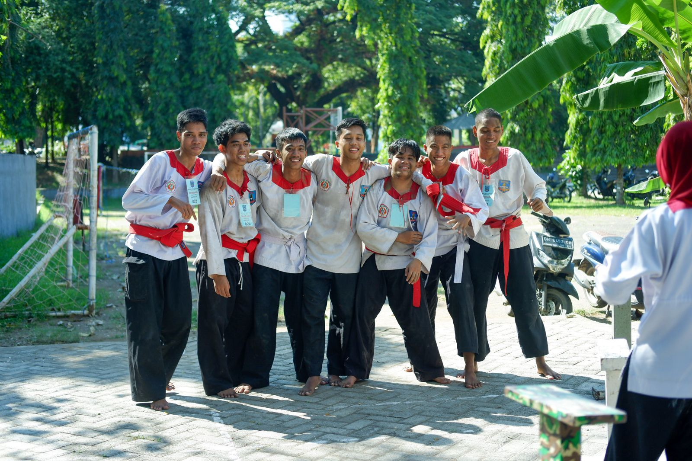
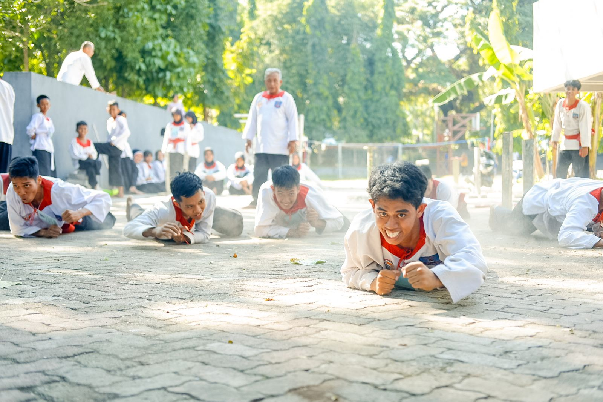
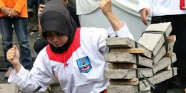

Merpati Putih
Perguruan Pencak silat
Merpati Putih adalah perguruan pencak silat asli indonesia yang berdiri pada tahun 1962 di yogyakarta
Merpati Putih adalah perguruan pencak silat asli indonesia yang berdiri pada tahun 1962 di yogyakarta
Indonesia tak hanya kaya akan hasil buminya, budaya yang dimiliki pun sangat beragam; salah satunya adalah seni bela diri pencak silat. Meski zaman telah berkembang dengan begitu pesat dan lebih modern, nyatanya pencak silat sebagai salah satu bela diri tradisional masih tetap ada, berbaur dengan banyaknya ilmu bela diri modern. Mungkin, kamu terdengar tak asing dengan perguruan pencak silat yang bernama Merpati Putih. Perguruan bela diri yang punya ajang kompetisi sendiri ini sangat terkenal di Indonesia. Sayangnya, tidak banyak yang mengetahui sebenarnya apa itu seni bela diri pencak silat yang dinamai Merpati Putih.
Merpati Putih adalah perguruan silat di Tanah Air yang mengajarkan seni bela diri menggunakan tangan kosong pada para anggotanya, atau sering disebut dengan istilah PPS Betako. Konon, ilmu bela diri ini sudah ada sejak tahun 1550an dan disebut sebagai cabang bela diri dari budaya Indonesia. Selain telah resmi menjadi salah satu anggota dari Ikatan Pencak Silat Seluruh Indonesia atau IPSI, kini Merpati Putih juga sudah resmi menjadi partisipan dari Martial Arts Federation for World Peace atau MAFWP. Tak hanya sampai di situ, seni bela diri satu ini pun resmi terdaftar sebagai anggota dari International Pencak Silat Federation atau Persekutuan Pencak Silat Antar Bangsa.
 









Merpati Putih
Phone Number: 082394556623 | Email: wahyurusman31@gmail.com
Instagram: @whyursmn